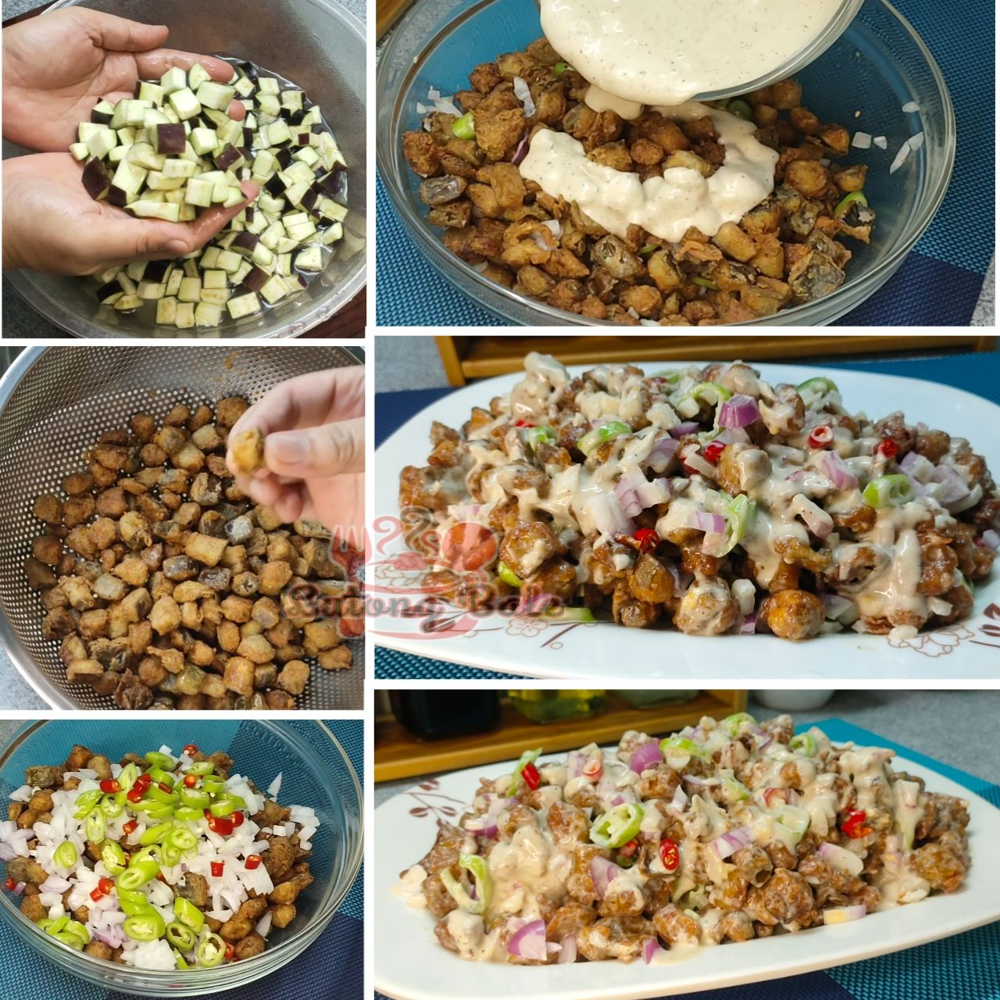

Crispy Sisig Talong

Ingredients
- 4 pcs. eggplants (cubed)
- Breading mix, flour, and paprika
- Mayonnaise, minced garlic, lemon juice, and liquid seasoning
Procedure
- Coat eggplant cubes in batter and breading mixture.
- Fry until golden brown and crispy.
- Mix fried eggplant with onions and chilies.
- Toss with the prepared mayonnaise sauce and serve.
Back to Dishes Menu